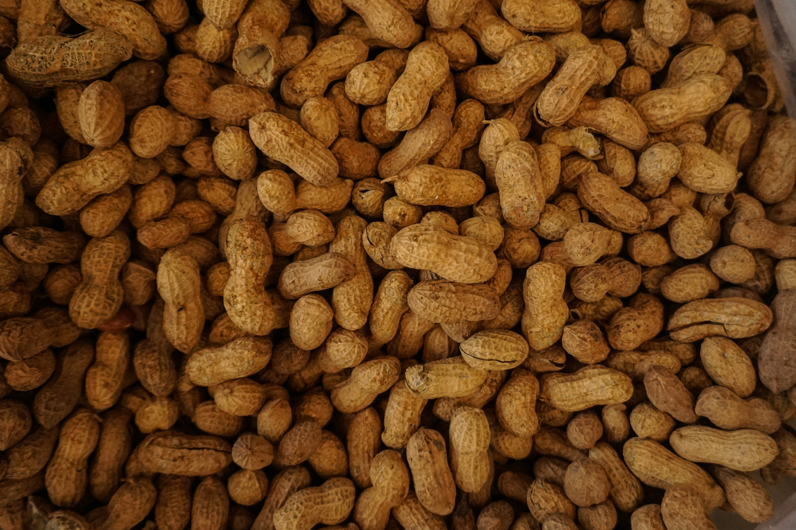

About Peanuts
Peanuts, also known as groundnuts, are legumes that grow underground. They are a rich source of protein, healthy fats, and various essential nutrients. Peanuts are commonly consumed as snacks, peanut butter, and cooking oil. Growing peanuts at home can be a rewarding experience, but it requires specific conditions for successful cultivation.
Steps to Grow Peanuts
- Choose a sunny location with well-drained soil for planting peanuts.
- Obtain peanut seeds (peanut kernels) and shell them, leaving the thin brown skin intact.
- Plant the peanut seeds about 2 inches deep and 6 to 8 inches apart in rows.
- Water the peanuts regularly, providing about 1 to 1.5 inches of water per week.
- Apply a balanced fertilizer to promote healthy growth.
- As the peanuts grow, they will send pegs into the soil. Once the pegs penetrate the soil, the peanuts will form underground.
- Harvest peanuts when the leaves turn yellow and the peanuts are mature, typically 120 to 150 days after planting.
Extra Information
Peanuts are not true nuts but belong to the legume family. They are an excellent source of monounsaturated fats, antioxidants, and various vitamins and minerals. Peanuts are versatile and can be enjoyed in both savory and sweet dishes. Growing peanuts requires warm temperatures and a relatively long growing season.